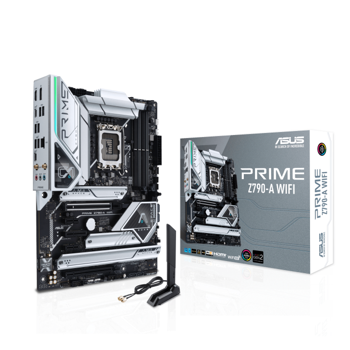

|
ASUS Prime Z790-A WIFI, an
Intel Z790 LGA 1700 ATX
motherboard with PCIe® 5.0,
four M.2 slots, 16+1 DrMOS,
DDR5, Intel WIFI 6E, 2.5 Gb LAN,
HDMI®, DP, USB 3.2 Gen 2x2
Type-C®, front USB 3.2 Gen 2
Type-C®, Thunderbolt™ (USB4®)
support
Intel® LGA 1700 socket: Ready for 12th and 13th Gen Intel® processors
Enhanced power solution: 16+1 DrMOS, ProCool
connectors, chokes and durable capacitors for stable
power delivery
Comprehensive cooling: Large VRM heatsinks, M.2
heatsinks, hybrid fan headers and Fan Xpert 4
Next-gen connectivity: DDR5 memory, PCIe® 5.0,
Intel 2.5 Gb Ethernet, USB 3.2 Gen2x2 Type-C®, front
panel USB 3.2 Gen 2 Type-C®, Thunderbolt™ (USB4®)
header support, 4 PCIe® 4.0 M.2
Exclusive AI & Memory technology: AI Cooling II, Two-
Way AI Noise-Cancelation, ASUS Enhanced Memory
Profile II and ASUS OptiMem II
PC DIY design: PCIe Slot Q-Release, M.2 Q-Latch, Q-
LED Core, and SafeSlot
|  |